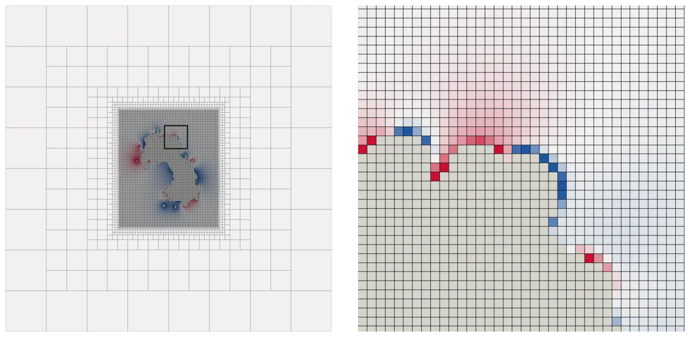
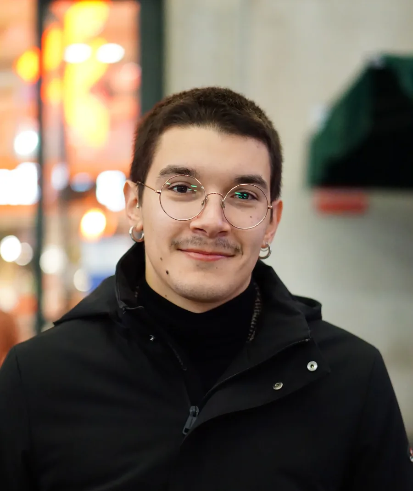
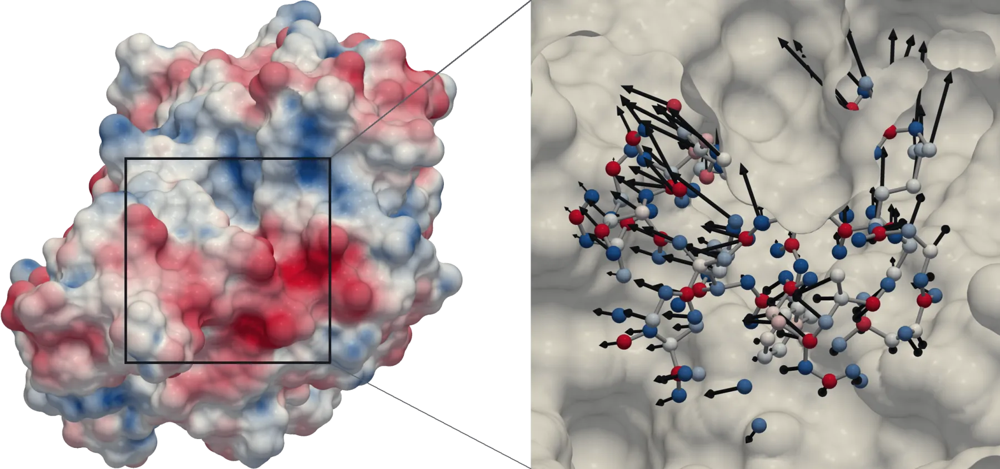
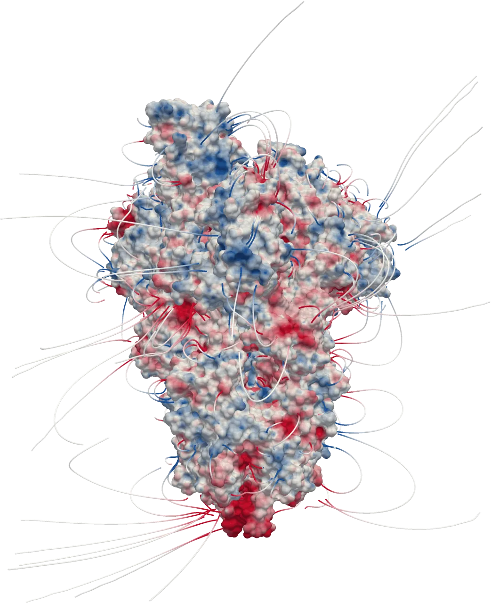

NextGenPB, a Poisson–Boltzmann solver
2021–Finite elements with analytical super-resolution; the mesh is fine only where the molecular surface is.

Computational physicist at MOX, Politecnico di Milano. I build solvers for the electrostatics of biomolecules.
A physicist turned computational scientist: I turn the language of physics into algorithms that work on real, messy problems.
Four lines of work, one solver at the centre.

Finite elements with analytical super-resolution; the mesh is fine only where the molecular surface is.



Forces and binding energies from the same solution, atom by atom.

Faster surface computation in NanoShaper; PINNs and physics-guided networks for electrostatics.
MOX – Modeling and Scientific Computing
Politecnico di Milano
Piazza Leonardo da Vinci 32, 20133 Milano